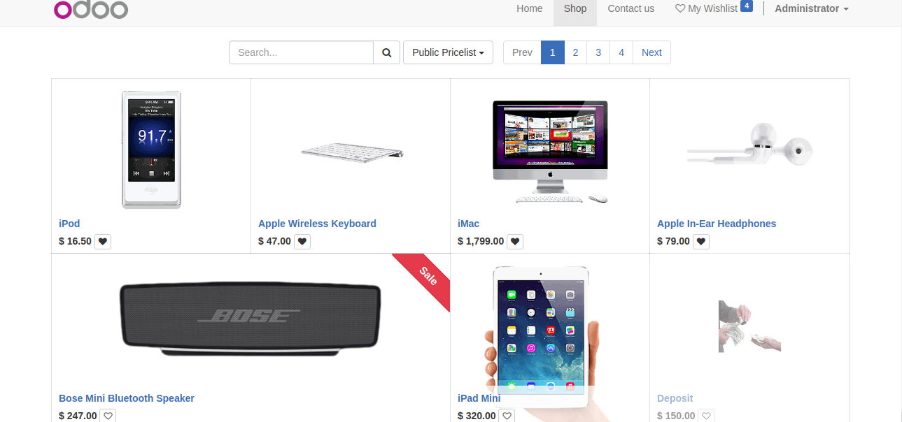
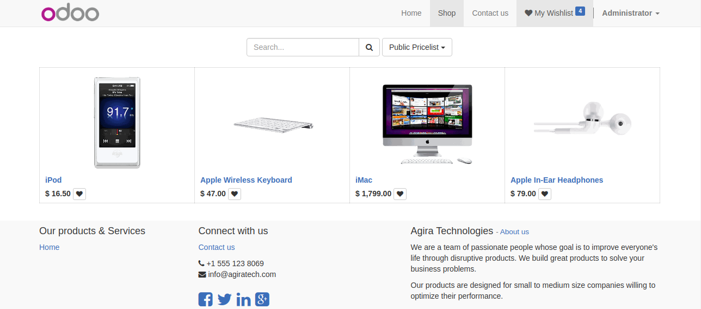

<div class="row" style="margin: 0;position: relative;color: #000;background-position: center;background: #ffffff;border-bottom: 1px solid #e4e4e4;text-align: center; margin: auto; display: flex;justify-content: center;">  <a  href="https://www.cybrosys.com/" target="_blank"></a> </div>
<div class="row" style="margin:75px 0;position: relative;color: #000;background-position: center;background: #ffffff;border-bottom: 1px solid #e4e4e4; padding-bottom: 30px;">
   <div class="col-md-7 col-sm-12 col-xs-12" style="padding: 0px">
      <div style=" margin: 0 0 0px;padding: 20px 0 10;font-size: 23px;line-height: 35px;font-weight: 400;color: #000;border-top: 1px solid rgba(255,255,255,0.1);border-bottom: 1px solid rgba(255,255,255,0.11);text-align: left;">
         <h1 style="font-size: 39px;font-weight: 600;margin: 0px !important;">Product Wishlist </h1>
         <h3 style="font-size: 21px;margin-top: 8px;position: relative;">This module allow user to add products in the wishlist.Easy to add your favorite products to the wishlist and move those to the shopping cart. </h3>
      </div>
      <h2 style="font-weight: 600;font-size: 1.8rem;margin-top: 15px;">Installation</h2>
      <h3 style="font-size: 21px;margin-top: 8px;position: relative;">Install this module to add the wishlist feature in the website.</h3>
      <h2 style="font-weight: 600;font-size: 1.8rem;margin-top: 15px;">Usage</h2>
      <ul style=" padding: 0 1px; list-style: none; ">
         <li style="display: flex;align-items: center;padding: 8px 0;font-size: 18px;"> Go to your shop. </li>
         <li style="display: flex;align-items: center;padding: 8px 0;font-size: 18px;"> Press on the heart icon for any product you wish to add. </li>
         <li style="display: flex;align-items: center;padding: 8px 0;font-size: 18px;"> You have now the top My Wishlist menu. </li>
         <li style="display: flex;align-items: center;padding: 8px 0;font-size: 18px;"> Clicking on it, will take you to a filtered view of your shop with only the wishlisted elements on it.</li>
      </ul>
   </div>
	<div class="col-md-5 col-sm-12 col-xs-12"></div>
    <div class="col-md-5 col-sm-12 col-xs-12"></div>
</div>